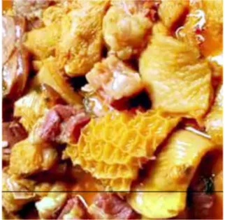

Kapitel 5 · Wein und Speisen kombinieren
Tripas à Moda do Porto

„Tripas“ oder „Dobradas“ (Kutteln) werden in der portugiesischen Küche zubereitet, indem man Magen und Gedärme vom Kalb mit würziger Räucherwurst und Speck kocht. Ein traditionelles Rezept aus der Zeit, als diese große Seefahrernation alles Fleisch an Bord nahm und die Welt entdeckte. Das Gericht wird mit Butterbohnen, Lorbeer, Knoblauch und Petersilie gekocht und schmeckt ebenfalls viel besser, als das Rezept klingt.
Wein: rot, vollmundig, mit lebendigen Tanninen und ausgewogener Säure, etwa ein großer Tischrotwein aus dem Douro, aber auch Rotweine aus dem Dão oder sogar ein roter Vinho Verde; oder einige Jahre alte, in französischer Eiche ausgebaute Weißweine.
Erklärung: Bei der Weinwahl sind Kutteln eine Frage der Textur, im Geschmack sind sie dezent. Ihre zähe, teils gallertartige Textur mit Neigung zur Süße verlangt Rotweine mit lebhafter Säure oder einen Weißwein mit mehr Körper.